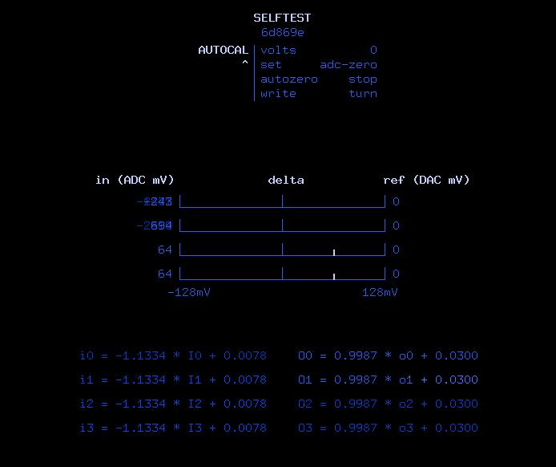

Calibration
Background
To support eurorack-level control voltages (CV), all inputs and outputs are DC-coupled. Audio codecs (such as the AK4619VN used here) are usually not designed for DC-coupled operation, which means that they often have quite large DC zero offsets and scaling terms compared to instrumentation converters.
Note
Without any calibration at all, the inputs and outputs will should have an error < 150mV or so across the range. Most examples will deal with this fine, however if you are driving or being driven by Eurorack V/oct tunings, 1 semitone is in the order 80mV. So, if you need to be pitch-perfect, calibration is worthwhile.
To reduce the tracking error, each input and output supports independent DC offset and scale correction factors:
For input ADCs,
i = A * I + B, whereiis the calibrated input,Iis the raw ADC count andA,Bare correction factors.For output DACs,
O = C * o + D, whereois the desired output,CandDare correction factors, andOis the raw DAC count.
Note that internally, the correction algorithm for inputs and outputs is identical. At the moment, audio samples are 16-bit fixed-point (shorthand ASQ in the code) with a range from -1..1 where (when calibrated) +1 == +8.192V (i.e 4 raw counts per mV). Both input and output sides can support wider voltage ranges, however this is currently what the codebase uses everywhere, and wide enough for most purposes.
All correction factors are stored as 18-bit fixed-point numbers with a range -4..4. Usually the scaling correction factors are close to 1, and the zeroing correction factors are close to 0.
Calibrating the ADCs/DACs
{kind=link}
Pictured above, the selftest bitstream provides a semi-automated way of performing ADC/DAC calibration.
In short, the process is as follows:
Disconnect all jacks. Power up Tiliqua, select
selftestbitstream, ensure startup report is healthy.Switch to the
AUTOCALscreen. The display will show the following options:volts: DAC reference level. This determines the value sent to the DAC. It is also subtracted from the ADC readings to form the ‘delta’ plot pictured on the main screen.set: Calibration coefficient to be automatically adjusted. The utility will adjust the selected coefficients until the ‘delta’ plot on the main screen has been zeroed.autozero: Enable autozero. When set tooff, nothing is adjusted. When set torun, the selected calibration coefficients will be adjusted. Usually, you switch torununtil the values are zeroed, then switch it off again.write: Write constants to non-volatile EEPROM and print them out the serial port.
Step 1 ADC zero:
With all jacks disconnected, set
volts=0,set=adc-zero.Switch
autozero=rununtil the ‘delta’ plots hit zero. Switch back toautozero=stopYou will notice the calibration equations at the bottom of the screen updated during the zeroing process.
Step 2 ADC scale:
Set an external precise voltage source to the desired test voltage, for example 3V.
With the first jack connected to your voltage source, set
volts=3,set=adc-scale.Switch
autozero=rununtil the ‘delta’ plots hit zero.Plug in the voltage source to the other jacks in sequence until they all also hit zero. Alternatively, you can just plug all the jacks into one voltage source at the same time, that’s up to you.
Switch back to
autozero=stopNow the ADCs are calibrated, you can test the range by injecting different voltages and adjusting
voltsto move the reference.
Step 3 DAC zero:
Now that all the ADCs are calibrated, we can use the ADC calibration to calibrate the DACs.
Connect all outputs to inputs in loopback with 4 patch cables (i.e. output 0 to input 0, output 1 to input 1 and so on).
Set
volts=0,set=dac-zero. You will see see the DAC output zero offsets, as the ADCs were already zeroed.Switch
autozero=rununtil the ‘delta’ plots hit zero. Switch back toautozero=stop
Step 4 DAC scale:
Set
volts=3,set=dac-scale. The ADC readings should already be pretty close to the target.Switch
autozero=rununtil the ‘delta’ plots hit zero. Switch back toautozero=stop
Step 5 Save the results
Select
writefrom the menu and turn the encoder to save the calibration to non-volatile EEPROM on the eurorack-pmod PCBA. The constants are also printed out the serial port. On switching to other bitstreams or returning to this bitstream, the previous calibration will be loaded from EEPROM.
Note
As of now, the calibration constants are only loaded from EEPROM in bitstreams that have an SoC. If you want to use the calibration constants in a bitstream without a SoC, for now you can copy and paste the serial-port dump into the default calibration you will find in eurorack_pmod.py.
You are done! optionally, you can also tweak the cal constants from the
TWEAK-ADCandTWEAK-DACscreens.
Note
During calibration, you may notice the DC offsets moving around ~10mV depending on whether the LEDs are on or off. Unfortunately there is no simple workaround for this as it seems the CODEC DC offsets depend on the CODEC supply voltage, despite us using a dedicated voltage reference. You may also see some higher offsets at high negative voltages. This is likely an artifact of us using the CODEC in an unsupported DC-coupled mode. In any case, it’s best to do the calibration assuming the LEDs are ON, as that is the state they will be in most of the time Tiliqua is being used. In the future, it should be possible to even calibrate out the effect of supply voltage changes to the CODEC, as the Tiliqua knows at all times how much power the audio PCBA should be consuming.